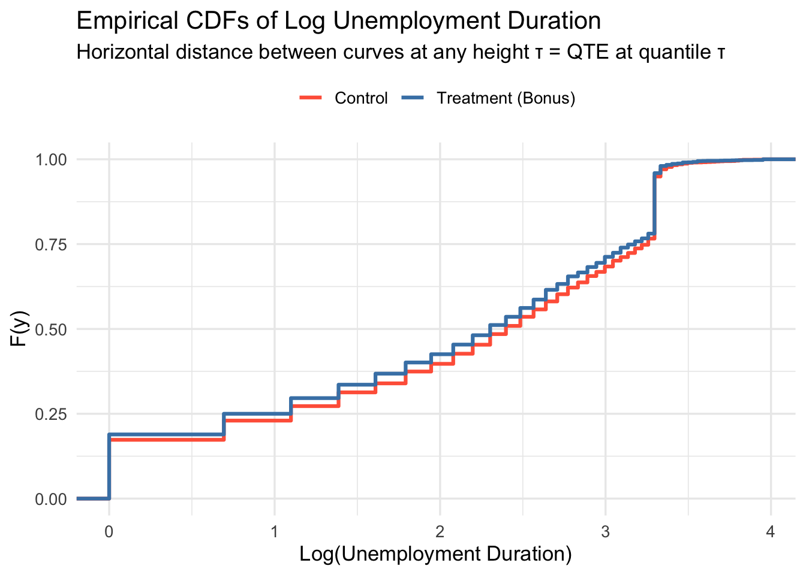
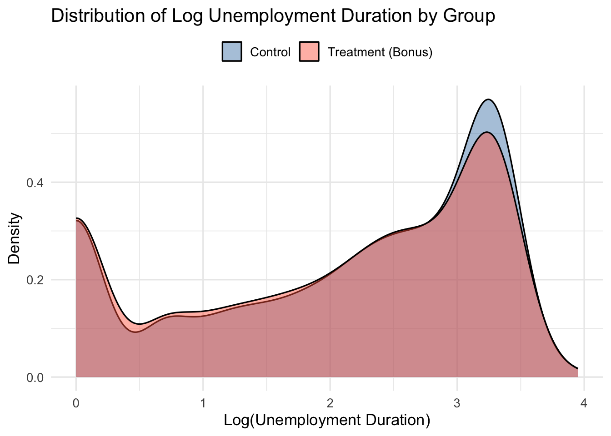
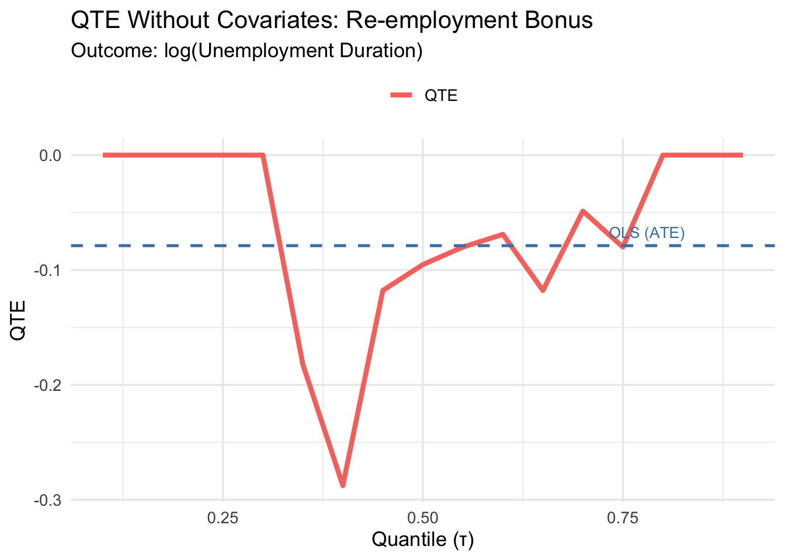
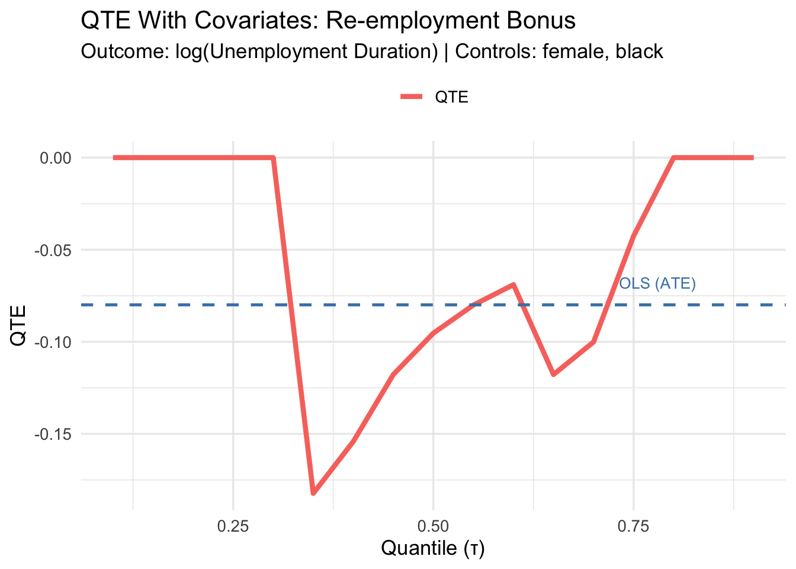

| Student | Control Score | Treatment Score | Change |
|---|---|---|---|
| Alice | 95 | 65 | -30 |
| Bob | 85 | 95 | 10 |
| Charlie | 75 | 75 | 0 |
| David | 65 | 55 | -10 |
| Eve | 55 | 85 | 30 |
3 Quantile Treatment Effects
3.1 Beyond the Average Treatment Effect
In the first part of this lecture, we focused on the Average Treatment Effect (ATE):
\[\text{ATE} = \mathbb{E}[Y_i(1) - Y_i(0)]\]
The ATE plays a central role in causal inference — but it summarizes the treatment effect by collapsing the entire distribution of individual treatment effects into a single number: the mean. This can mask substantial heterogeneity in how the treatment affects different individuals.
Quantile Treatment Effects (QTEs) offer an alternative: instead of focusing on one aspect of the distribution (the mean), they let us study how a treatment shifts the entire outcome distribution.
NoteQTE vs ATE
- The ATE answers: “What is the average effect of treatment?”
- The QTE at quantile \(\tau\) answers: “By how much does treatment shift the \(\tau\)-th quantile of the outcome distribution?”
These can differ substantially when treatment effects are heterogeneous — which is often the case in practice.
3.2 Quantiles: A Brief Refresher
Suppose \(Y \sim F\). The \(\tau\)-quantile of \(Y\) is defined as the inverse CDF:
\[F^{-1}(\tau) = \inf\{ y : F(y) \geq \tau \}, \quad \tau \in (0,1)\]
A few properties worth recalling:
- For \(\tau = 1/2\), \(F^{-1}(1/2)\) is the median.
- Quantiles are robust to long-tailed distributions and outliers.
- Quantiles are often more informative than mean-based summaries when distributions are skewed or heavy-tailed.
3.3 Definition and Identification of QTE
Setup. Let \(F_0(y)\) denote the CDF of \(Y_i(0)\) (the control potential outcome) and \(F_1(y)\) the CDF of \(Y_i(1)\) (the treated potential outcome). Then:
\[\text{QTE}_\tau = F_1^{-1}(\tau) - F_0^{-1}(\tau)\]
This is the horizontal distance between the two CDFs at a given probability level \(\tau\).
Identification under random assignment. QTEs are defined in terms of potential outcomes, which we never fully observe. Under random assignment,
\[(Y_i(0), Y_i(1)) \perp D_i,\]
the observed conditional distributions coincide with the potential outcome distributions:
\[F(y \mid D_i = 0) = F_0(y), \qquad F(y \mid D_i = 1) = F_1(y).\]
So the QTE is directly identified from observables:
\[\underbrace{F_1^{-1}(\tau) - F_0^{-1}(\tau)}_{\text{QTE}_\tau,\ \text{unobserved}} \;=\; \underbrace{F^{-1}(\tau \mid D_i=1) - F^{-1}(\tau \mid D_i = 0)}_{\text{observed difference in sample quantiles}}\]
TipThe parallel with the ATE
This identification result mirrors exactly what we showed for the ATE. Under random assignment:
\[\underbrace{\mathbb{E}[Y_i(1) - Y_i(0)]}_{\text{ATE}} = \underbrace{\mathbb{E}[Y_i \mid D_i=1] - \mathbb{E}[Y_i \mid D_i=0]}_{\text{difference in sample means}}\]
The logic is the same: randomization lets us use observed group differences to recover causal quantities. For the ATE we compare means; for the QTE we compare quantiles.
3.4 Interpretation: Rank Invariance and Rank Reversals
Before turning to estimation, it is important to understand what QTEs tell us — and when their interpretation is clean.
3.4.1 Rank Invariance
Rank invariance holds when individuals retain their relative positions in the outcome distribution regardless of treatment status. That is: if person A would have a lower outcome than person B without treatment, they would still rank lower under treatment.
Under rank invariance, \(\text{QTE}_\tau\) has a clean causal interpretation: it tells us how much the treatment changed the outcome for those at the \((\tau \times 100)\)-th percentile in the absence of treatment.
3.4.2 Rank Reversals
Rank invariance is a strong assumption. With heterogeneous treatment effects, some individuals benefit a lot while others benefit little — or even negatively — which can reshuffle the outcome rankings. This is a rank reversal.
The table below illustrates this. Five students take a final exam. We observe scores with and without a tutoring program:
Alice, the top scorer without tutoring (rank 1), drops to rank 4 with it. Eve, the bottom scorer (rank 5), jumps to rank 2. Ranks are reshuffled by treatment.
ImportantConsequence of rank reversals for QTE interpretation
When rank reversals are present, \(\text{QTE}_\tau\) does not describe the effect for those who would have been at quantile \(\tau\) without treatment. It measures how much quantile \(\tau\) of the distribution shifts — but the individuals composing that quantile may differ between the treated and control worlds.
A striking consequence: it is possible for all QTEs to equal zero even when every individual has a non-zero treatment effect. In the table above, the sorted control scores (55, 65, 75, 85, 95) equal the sorted treatment scores (55, 65, 75, 85, 95), so \(\text{QTE}_\tau = 0\) for all \(\tau\) — yet only Charlie has a zero individual treatment effect.
3.5 The Penn Re-employment Bonus Experiment
We now turn to data. We use the Pennsylvania Re-employment Bonus Experiment, where unemployed workers were randomized to receive a cash bonus for finding a new job quickly.
- Treatment (
tg = 2): Eligible for a re-employment bonus - Control (
tg = 0): Standard unemployment insurance, no bonus - Outcome (
inuidur1): Duration of the unemployment spell (in weeks) - Covariates:
female,black
raw_data_penn <- read.table("data/penn_jae.dat", header = TRUE)
data_penn <- raw_data_penn %>%
filter(tg == 2 | tg == 0) %>%
select(inuidur1, tg, female, black) %>%
mutate(
inuidur1 = as.numeric(inuidur1),
tg = as.factor(tg)
)3.5.1 Visualizing the Distributions
A natural starting point is to plot the empirical CDFs by group. Recall from the theory: \(\text{QTE}_\tau\) is the horizontal distance between the two CDFs at height \(\tau\).
data_penn %>%
mutate(group = ifelse(tg == 0, "Control", "Treatment (Bonus)")) %>%
ggplot(aes(x = log(inuidur1), color = group)) +
stat_ecdf(linewidth = 1.1) +
scale_color_manual(values = c("Control" = "tomato",
"Treatment (Bonus)" = "steelblue")) +
labs(
title = "Empirical CDFs of Log Unemployment Duration",
subtitle = "Horizontal distance between curves at any height τ = QTE at quantile τ",
x = "Log(Unemployment Duration)",
y = "F(y)",
color = NULL
) +
theme_minimal(base_size = 13) +
theme(legend.position = "top")
Since visualization in terms of CDFs might feel unfamiliar, let’s plot the (smoothed) empirical densities of log unemployment by group too.
data_penn %>%
mutate(group = ifelse(tg == 0, "Control", "Treatment (Bonus)")) %>%
ggplot(aes(x = log(inuidur1), fill = group)) +
geom_density(alpha = 0.45) +
scale_fill_manual(values = c("steelblue", "tomato")) +
labs(
title = "Distribution of Log Unemployment Duration by Group",
x = "Log(Unemployment Duration)",
y = "Density",
fill = NULL
) +
theme_minimal(base_size = 13) +
theme(legend.position = "top")
TipReading QTEs from the CDF plot
Pick a horizontal line at height \(\tau\). Where it crosses the control CDF gives \(\hat{F}_0^{-1}(\tau)\); where it crosses the treatment CDF gives \(\hat{F}_1^{-1}(\tau)\). The horizontal distance between those two points is \(\widehat{\text{QTE}}_\tau\). If the treatment CDF lies to the left of the control CDF, treatment reduced unemployment duration — a beneficial effect.
TipWhy log?
Unemployment duration is right-skewed. Working with log(inuidur1) yields a more symmetric distribution and more stable quantile estimates.
3.6 Part A: QTE Without Covariates
3.6.1 Method 1: Direct Difference in Sample Quantiles
Under random assignment, QTEs are simply the difference in empirical quantiles between groups:
\[\widehat{\text{QTE}}_\tau = \hat{F}_1^{-1}(\tau) - \hat{F}_0^{-1}(\tau)\]
This is the most transparent approach — directly analogous to computing the ATE as a difference in sample means.
Y1 <- log(data_penn$inuidur1[data_penn$tg == 2])
Y0 <- log(data_penn$inuidur1[data_penn$tg == 0])
tau <- seq(0.1, 0.9, by = 0.05)
qte_direct <- quantile(Y1, probs = tau) - quantile(Y0, probs = tau)3.6.2 Method 2: Quantile Regression Without Covariates
Equivalently, we can run a quantile regression of the outcome on the treatment indicator:
\[Q_\tau(\log(\texttt{inuidur1}) \mid D_i) = \alpha(\tau) + \beta(\tau) \cdot D_i\]
The coefficient \(\hat{\beta}(\tau)\) is numerically identical to the difference in sample quantiles — just as OLS on a binary treatment recovers the difference in means.
qte_rq_no_cov <- sapply(tau, function(t) {
rq(log(inuidur1) ~ tg, tau = t, data = data_penn)$coef[2]
})Warning in rq.fit.br(x, y, tau = tau, ...): Solution may be nonunique
Warning in rq.fit.br(x, y, tau = tau, ...): Solution may be nonunique
Warning in rq.fit.br(x, y, tau = tau, ...): Solution may be nonunique3.6.3 Verifying the Equivalence
data.frame(
tau = tau,
Direct = round(qte_direct, 6),
Quantile_Reg = round(qte_rq_no_cov, 6)
) %>%
mutate(Identical = Direct == Quantile_Reg) %>%
kbl(
col.names = c("τ", "Diff. in Quantiles", "Quantile Reg.", "Identical?"),
caption = "Direct difference in quantiles vs. quantile regression (no covariates)"
) %>%
kable_styling(bootstrap_options = c("striped", "hover"),
full_width = FALSE)| τ | Diff. in Quantiles | Quantile Reg. | Identical? | |
|---|---|---|---|---|
| 10% | 0.10 | 0.000000 | 0.000000 | TRUE |
| 15% | 0.15 | 0.000000 | 0.000000 | TRUE |
| 20% | 0.20 | 0.000000 | 0.000000 | TRUE |
| 25% | 0.25 | -0.101366 | 0.000000 | FALSE |
| 30% | 0.30 | 0.000000 | 0.000000 | TRUE |
| 35% | 0.35 | -0.182322 | -0.182322 | TRUE |
| 40% | 0.40 | -0.287682 | -0.287682 | TRUE |
| 45% | 0.45 | -0.117783 | -0.117783 | TRUE |
| 50% | 0.50 | -0.095310 | -0.095310 | TRUE |
| 55% | 0.55 | -0.080043 | -0.080043 | TRUE |
| 60% | 0.60 | -0.068993 | -0.068993 | TRUE |
| 65% | 0.65 | -0.117783 | -0.117783 | TRUE |
| 70% | 0.70 | -0.048790 | -0.048790 | TRUE |
| 75% | 0.75 | -0.080043 | -0.080043 | TRUE |
| 80% | 0.80 | 0.000000 | 0.000000 | TRUE |
| 85% | 0.85 | 0.000000 | 0.000000 | TRUE |
| 90% | 0.90 | 0.000000 | 0.000000 | TRUE |
NoteThe same logic as the ATE
| Mean effect | Quantile effect at \(\tau\) | |
|---|---|---|
| Direct | \(\bar{Y}_1 - \bar{Y}_0\) | \(\hat{F}_1^{-1}(\tau) - \hat{F}_0^{-1}(\tau)\) |
| Regression | OLS of \(Y\) on \(D\) | Quantile reg. of \(Y\) on \(D\) |
| Identical? | ✓ | ✓ |
In a randomized experiment, both routes give the same answer. The regression framing becomes valuable when we want to add covariates.
3.6.4 ATE Without Covariates (Benchmark)
ate_no_cov <- mean(Y1) - mean(Y0)
cat("ATE (difference in means):", round(ate_no_cov, 4), "\n")ATE (difference in means): -0.0788 3.6.5 Plotting the No-Covariate QTEs
plot_qte_1(qte_rq_no_cov, tau) +
geom_hline(yintercept = ate_no_cov, linetype = "dashed",
color = "steelblue", linewidth = 0.9) +
annotate("text", x = 0.78, y = ate_no_cov + 0.012,
label = "OLS (ATE)", color = "steelblue", size = 3.5) +
labs(
title = "QTE Without Covariates: Re-employment Bonus",
subtitle = "Outcome: log(Unemployment Duration)",
x = "Quantile (τ)",
y = "QTE",
color = NULL
) +
theme_minimal(base_size = 13) +
theme(legend.position = "top")
3.7 Part B: QTE With Covariates
3.7.1 Why add covariates?
Treatment is randomized here, so covariates are not needed for identification. However, including pre-determined covariates (female, black) can improve precision — exactly as in the ATE case. Since both covariates are binary, the adjustment is clean and straightforward; no non-parametric methods are required.
\[Q_\tau(\log(\texttt{inuidur1}) \mid D_i, \mathbf{X}_i) = \alpha(\tau) + \beta(\tau) \cdot D_i + \gamma_1(\tau) \cdot \texttt{female}_i + \gamma_2(\tau) \cdot \texttt{black}_i\]
qte_cov <- sapply(tau, function(t) {
rq(log(inuidur1) ~ tg + female + black,
tau = t,
data = data_penn)$coef[2]
})Warning in rq.fit.br(x, y, tau = tau, ...): Solution may be nonunique
Warning in rq.fit.br(x, y, tau = tau, ...): Solution may be nonunique
Warning in rq.fit.br(x, y, tau = tau, ...): Solution may be nonunique
Warning in rq.fit.br(x, y, tau = tau, ...): Solution may be nonunique
Warning in rq.fit.br(x, y, tau = tau, ...): Solution may be nonunique
Warning in rq.fit.br(x, y, tau = tau, ...): Solution may be nonunique
Warning in rq.fit.br(x, y, tau = tau, ...): Solution may be nonuniquereg_ols_cov <- lm(log(inuidur1) ~ tg + female + black, data = data_penn)
ate_cov <- coef(reg_ols_cov)[2]
cat("ATE (with covariates):", round(ate_cov, 4), "\n")ATE (with covariates): -0.0799 3.7.2 Covariate-Adjusted QTEs
plot_qte_1(qte_cov, tau) +
geom_hline(yintercept = ate_cov, linetype = "dashed",
color = "steelblue", linewidth = 0.9) +
annotate("text", x = 0.78, y = ate_cov + 0.012,
label = "OLS (ATE)", color = "steelblue", size = 3.5) +
labs(
title = "QTE With Covariates: Re-employment Bonus",
subtitle = "Outcome: log(Unemployment Duration) | Controls: female, black",
x = "Quantile (τ)",
y = "QTE",
color = NULL
) +
theme_minimal(base_size = 13) +
theme(legend.position = "top")
3.7.3 Tabular Summary at Selected Quantiles
selected_tau <- c(0.10, 0.25, 0.50, 0.75, 0.90)
qte_no_cov_sel <- sapply(selected_tau, function(t)
rq(log(inuidur1) ~ tg, tau = t, data = data_penn)$coef[2])Warning in rq.fit.br(x, y, tau = tau, ...): Solution may be nonunique
Warning in rq.fit.br(x, y, tau = tau, ...): Solution may be nonunique
Warning in rq.fit.br(x, y, tau = tau, ...): Solution may be nonuniqueqte_cov_sel <- sapply(selected_tau, function(t)
rq(log(inuidur1) ~ tg + female + black, tau = t, data = data_penn)$coef[2])Warning in rq.fit.br(x, y, tau = tau, ...): Solution may be nonunique
Warning in rq.fit.br(x, y, tau = tau, ...): Solution may be nonunique
Warning in rq.fit.br(x, y, tau = tau, ...): Solution may be nonunique
Warning in rq.fit.br(x, y, tau = tau, ...): Solution may be nonuniquedata.frame(
tau = selected_tau,
QTE_no_cov = round(qte_no_cov_sel, 4),
QTE_cov = round(qte_cov_sel, 4),
ATE_no_cov = round(ate_no_cov, 4),
ATE_cov = round(ate_cov, 4)
) %>%
kbl(
col.names = c("τ", "QTE (no cov.)", "QTE (w/ cov.)",
"ATE (no cov.)", "ATE (w/ cov.)"),
caption = "QTE and ATE with and without covariate adjustment"
) %>%
kable_styling(bootstrap_options = c("striped", "hover"),
full_width = FALSE) %>%
add_header_above(c(" " = 1, "Quantile Regression" = 2, "OLS" = 2))Warning in data.frame(tau = selected_tau, QTE_no_cov = round(qte_no_cov_sel, :
row names were found from a short variable and have been discarded| τ | QTE (no cov.) | QTE (w/ cov.) | ATE (no cov.) | ATE (w/ cov.) |
|---|---|---|---|---|
| 0.10 | 0.0000 | 0.0000 | -0.0788 | -0.0799 |
| 0.25 | 0.0000 | 0.0000 | -0.0788 | -0.0799 |
| 0.50 | -0.0953 | -0.0953 | -0.0788 | -0.0799 |
| 0.75 | -0.0800 | -0.0426 | -0.0788 | -0.0799 |
| 0.90 | 0.0000 | 0.0000 | -0.0788 | -0.0799 |
3.8 Key Takeaways
ImportantSummary
QTEs reveal heterogeneity the ATE hides. A flat QTE curve means constant treatment effects; departures from flatness reveal distributional heterogeneity.
Without covariates, QTE = difference in sample quantiles, just as ATE = difference in sample means. Quantile regression is just a convenient — and extensible — way to compute this.
Adding discrete covariates improves precision without complicating the estimator. With continuous covariates, more sophisticated methods (kernel, propensity score) are needed.
Interpretation depends on rank invariance. Under rank invariance, \(\text{QTE}_\tau\) describes the effect on individuals at the \((\tau \times 100)\)-th percentile. With rank reversals, it describes how the quantile itself shifts — not necessarily the same individuals.
The sign here: negative QTEs mean the bonus reduced unemployment duration — workers found jobs faster. This is the intended mechanism of the program.
NoteGoing further: inference
For confidence bands around QTEs, use bootstrap standard errors via summary.rq():
summary(rq(log(inuidur1) ~ tg + female + black, tau = 0.5, data = data_penn),
se = "boot")For simultaneous confidence bands across all quantiles and automatic handling of continuous covariates, see the qte R package.